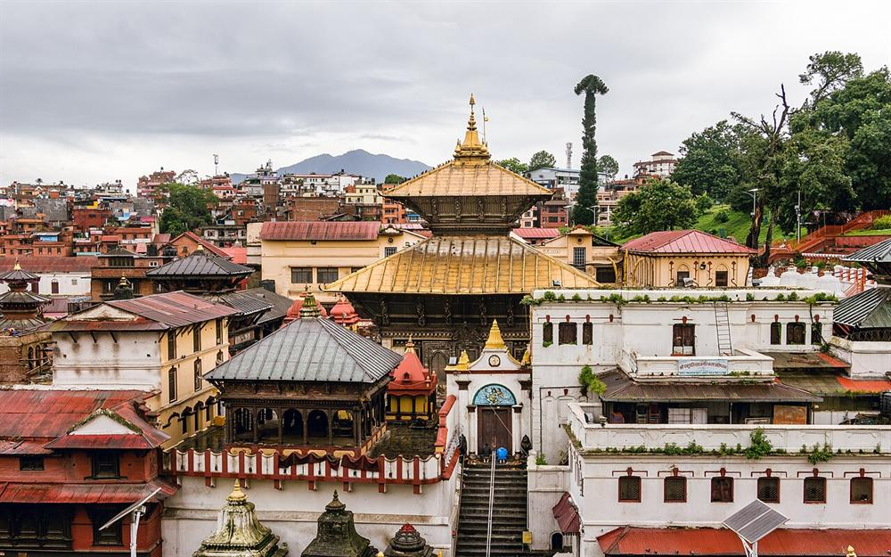
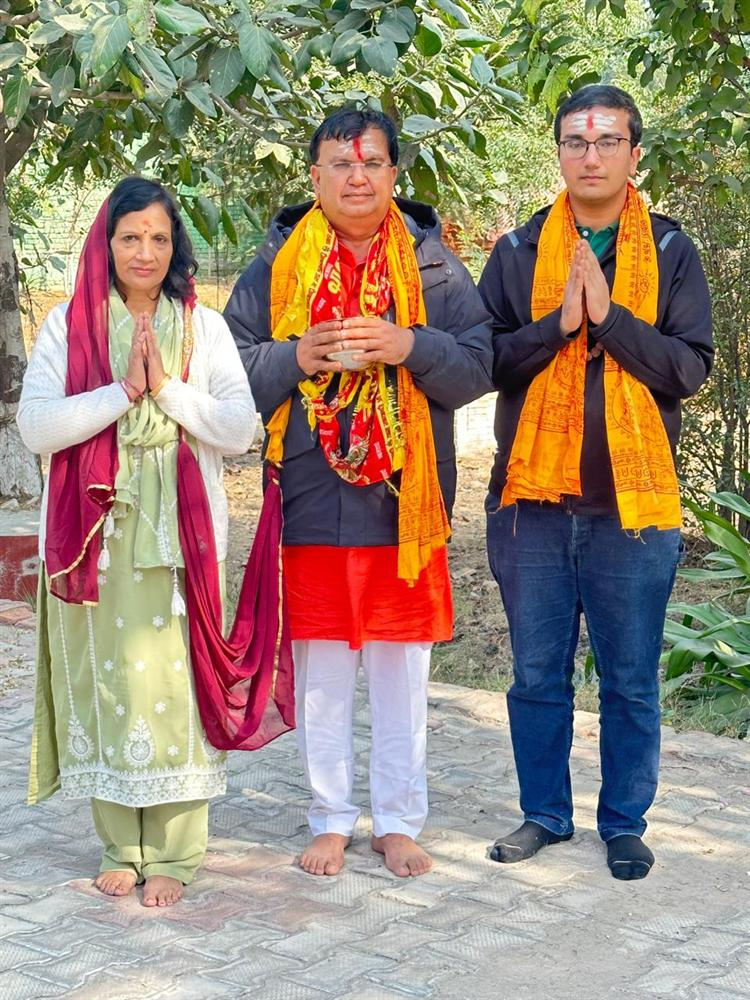

॥ ॐ पशुपतये नमः ॥
॥ ॐ नमः शिवाय ॥
श्री पशुपतिनाथ धाम, हसनगढ़
A sacred abode of Lord Shiva at Hassangarh, Haryana — inspired by Pashupatinath, Kathmandu.
कर्पूरगौरं करुणावतारं संसारसारं भुजगेन्द्रहारम् ।
"I bow to Lord Shiva — pure as camphor, the incarnation of compassion, ever dwelling in the lotus of my heart."
Shri Pashupatinath Dham at Hassangarh, Sampla (Rohtak), Haryana is dedicated to Bhagwan Shiva as Pashupati — the Lord and protector of all beings.
Its sacred murtis of the Shiva Parivar were brought from Pashupatinath, Kathmandu on 3 September 2023 by Dr. Kamlesh Kumar Saini and his family. Built through the seva of devotees, the dham is guided by the Param Sewak Board — see its story in “The Making of the Dham” →
Shiva as Pashupatinath
Hassangarh, Rohtak, Haryana
From Pashupatinath, Kathmandu
Free meals every 30 Nov
Pashupati means “Lord of all creatures” — the compassionate form of Shiva who protects every soul.
Shiva as the guardian who guides every soul toward liberation.
Devotion to Pashupatinath is believed to free the soul from birth and death.
Pashupatinath, Kathmandu — worshipped for over 2,000 years.
Devotees gather to offer bael leaves, milk and prayers to Mahadev.
॥ ॐ नमः शिवाय ॥
“I bow to Lord Shiva.”
ॐ त्र्यम्बकं यजामहे सुगन्धिं पुष्टिवर्धनम् ।
उर्वारुकमिव बन्धनान्मृत्योर्मुक्षीय माऽमृतात् ॥
The Maha Mrityunjaya Mantra — for health and protection.

Our dham draws its inspiration from the legendary Pashupatinath Mandir of Kathmandu, Nepal — Nepal's holiest Shiva temple, on the banks of the sacred Bagmati.
The sacred murtis of the Shiva Parivar at our dham were brought from Pashupatinath, Kathmandu on 3 September 2023, carrying its divine blessings to Hassangarh.
Every year the dham hosts a grand Bhandara — a free community feast open to all.
Every year on 30th November, prasad and a wholesome meal are served to every devotee and visitor. Sabka swagat hai — all are welcome.
On 3 September 2023, Dr. Kamlesh Kumar Saini — son of Col. Bhajan Lal Saini (Retd.) — together with his family, brought the sacred murtis of the Shiva Parivar (the Pashupatinath family) from Kathmandu, Nepal, and by the grace of Lord Shiva had this temple built.
On 30 November 2024, the Pran Pratishtha (consecration) of the Shiva Parivar was performed at the dham, along with the first Vishal (grand) Bhandara.
🙏 All Shiva devotees are warmly welcome. Please note: no offerings or donations of any kind are solicited.

Chairman
Vice Chairman
President
Vice President
Treasurer
See the complete photo gallery and the story of how the dham was built — from open land to the finished temple.
This site is shared for information and darshan. For any voluntary seva or contribution, kindly contact Prof. Dr. Kamlesh Kumar Saini (General Secretary). Hara Hara Mahadev.
Hassangarh, Sampla,
District Rohtak — 124404,
Haryana, India